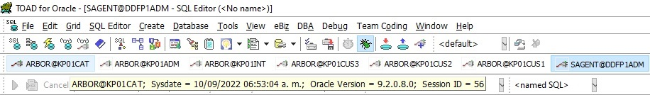

UID PID PPID C STIME TTY TIME COMMAND
ctmft 7645 7612 0 05:46:02 ? 0:21 /opt/java1.4/jre/bin/PA_RISC2.0/java -classpath /prg/kbpp01/int
ctmft 8040 8030 0 05:44:00 ? 0:00 -csh -c /bin/sh -x /tmp/ctm/CMD.5941877 >&! /home/ctmagent/ct
ctmft 13863 1 253 04:58:48 ? 44:42 BIP bip11 3
ctmft 10403 10395 0 05:44:03 ? 0:00 /bin/sh run.sh gc12 8
ctmft 8028 10653 0 05:46:03 ? 0:00 /bin/sh run.sh gc12 10
ctmft 20313 13613 1 06:51:22 ? 0:00 grep -c 4
ctmft 6328 6311 0 05:02:03 ? 0:00 -csh -c /bin/sh -x /tmp/ctm/CMD.5941644 >&! /home/ctmagent/ct
ctmft 10541 10527 0 05:44:03 ? 0:00 /bin/sh /PCANTV/INTERFACES/GESTIONCOB/batch/CFTCXUD001.sh gc12
ctmft 20325 20319 0 06:51:22 ? 0:00 awk {print $3}
ctmft 8046 8031 0 05:44:00 ? 0:00 -csh -c /bin/sh -x /tmp/ctm/CMD.5941876 >&! /home/ctmagent/ct
ctmft 10527 8037 0 05:44:03 ? 0:00 /bin/sh -x /tmp/ctm/CMD.5941881
ctmft 13795 1 252 04:58:33 ? 46:47 BIP bip01 5
ctmft 17627 1 253 04:59:31 ? 46:56 BIP bip22 3
ctmft 20443 1 254 04:59:40 ? 45:35 BIP bip25 3
ctmft 8525 7645 149 05:46:05 ? 1:28 /opt/java1.4/jre/bin/PA_RISC2.0W/java -Xmx256m -DExecMode=gc12
ctmft 7916 10442 0 05:46:03 ? 0:00 /bin/sh run.sh gc12 6
ctmft 26553 1 254 05:00:56 ? 47:32 BIP bip20 5
ctmft 18483 1 254 04:59:35 ? 42:12 BIP bip23 3
ctmft 13879 1 255 04:58:52 ? 45:52 BIP bip12 3
ctmft 13585 12257 0 04:56:31 ? 0:00 /bin/sh -x /tmp/ctm/CMD.5940689
ctmft 13590 13583 253 04:56:31 ? 4:17 /bin/sh /PCANTV/KENAN/FACTURACION/batch/CFTBIUC010.sh 20220906
ctmft 13797 1 252 04:58:34 ? 45:10 BIP bip05 3
ctmft 20331 20328 1 06:51:22 ? 0:00 awk {print $3}
ctmft 7936 7877 0 05:02:05 ? 0:20 /opt/java1.4/bin/PA_RISC2.0W/java -Djava.endorsed.dirs=/appl/kb
ctmft 6992 6295 149 05:45:58 ? 1:18 /opt/java1.4/jre/bin/PA_RISC2.0W/java -Xmx256m -DExecMode=gc12
ctmft 10644 8036 0 05:44:03 ? 0:00 /bin/sh -x /tmp/ctm/CMD.5941878
ctmft 9047 9015 0 05:46:08 ? 0:21 /opt/java1.4/jre/bin/PA_RISC2.0/java -classpath /prg/kbpp01/int
ctmft 14533 1 254 04:59:15 ? 46:40 BIP bip18 3
ctmft 14026 1 252 04:59:10 ? 46:43 BIP bip17 3
ctmft 13834 1 252 04:58:42 ? 49:05 BIP bip03 5
ctmft 20317 13591 1 06:51:22 ? 0:00 grep -c 4
ctmft 20320 20316 2 06:51:22 ? 0:00 ps -o args= -C BIP
ctmft 10863 8001 0 05:44:04 ? 0:00 /bin/sh -x /tmp/ctm/CMD.5941884
ctmft 13911 1 255 04:58:58 ? 44:18 BIP bip14 3
ctmft 13583 12259 0 04:56:31 ? 0:00 /bin/sh -x /tmp/ctm/CMD.5940683
ctmft 8741 10645 0 05:46:06 ? 0:00 /bin/sh run.sh gc12 5
ctmft 13591 13585 253 04:56:31 ? 4:10 /bin/sh /PCANTV/KENAN/FACTURACION/batch/CFTBIUC011.sh 20220906
ctmft 12259 12255 0 04:56:29 ? 0:00 -csh -c /bin/sh -x /tmp/ctm/CMD.5940683 >&! /home/ctmagent/ct
ctmft 13813 1 253 04:58:36 ? 43:27 BIP bip06 3
ctmft 20329 20326 1 06:51:22 ? 0:00 awk {print $3}
ctmft 10442 10431 0 05:44:03 ? 0:00 /bin/sh run.sh gc12 6
ctmft 8051 8042 0 05:44:00 ? 0:00 -csh -c /bin/sh -x /tmp/ctm/CMD.5941870 >&! /home/ctmagent/ct
ctmft 20328 13600 1 06:51:22 ? 0:00 grep -c 5
ctmft 6172 1 255 05:00:17 ? 39:09 BIP bip15 5
ctmft 10653 10647 0 05:44:03 ? 0:00 /bin/sh run.sh gc12 10
ctmft 12267 12263 0 04:56:29 ? 0:00 -csh -c /bin/sh -x /tmp/ctm/CMD.5940676 >&! /home/ctmagent/ct
ctmft 26042 1 254 04:59:56 ? 42:50 BIP bip13 5
ctmft 15814 1 255 04:59:24 ? 50:00 BIP bip17 4
ctmft 16531 1 254 04:59:27 ? 49:47 BIP bip18 4
ctmft 8140 10580 0 05:46:04 ? 0:00 /bin/sh run.sh gc12 1
ctmft 24108 1 255 04:59:51 ? 45:50 BIP bip29 3
ctmft 9580 8905 153 05:46:10 ? 1:26 /opt/java1.4/jre/bin/PA_RISC2.0W/java -Xmx256m -DExecMode=gc12
ctmft 6271 10403 0 05:45:55 ? 0:00 /bin/sh run.sh gc12 8
ctmft 13593 13587 251 04:56:31 ? 3:45 /bin/sh /PCANTV/KENAN/FACTURACION/batch/CFTBIUC007.sh 20220906
ctmft 13599 13592 251 04:56:31 ? 3:42 /bin/sh /PCANTV/KENAN/FACTURACION/batch/CFTBIUC009.sh 20220906
ctmft 13749 1 252 04:58:31 ? 42:32 BIP bip04 3
ctmft 10395 10385 0 05:44:03 ? 0:00 /bin/sh /PCANTV/INTERFACES/GESTIONCOB/batch/CFTCXUD001.sh gc12
ctmft 8049 8041 0 05:44:00 ? 0:00 -csh -c /bin/sh -x /tmp/ctm/CMD.5941871 >&! /home/ctmagent/ct
ctmft 10580 10541 0 05:44:03 ? 0:00 /bin/sh run.sh gc12 1
ctmft 13849 1 254 04:58:46 ? 48:34 BIP bip07 4
ctmft 9015 10552 0 05:46:08 ? 0:00 /bin/sh run.sh gc12 7
ctmft 10647 10644 0 05:44:03 ? 0:00 /bin/sh /PCANTV/INTERFACES/GESTIONCOB/batch/CFTCXUD001.sh gc12
ctmft 13934 1 255 04:59:03 ? 46:22 BIP bip07 5
ctmft 9579 8820 150 05:46:10 ? 1:25 /opt/java1.4/jre/bin/PA_RISC2.0W/java -Xmx256m -DExecMode=gc12
ctmft 13973 1 254 04:59:09 ? 44:53 BIP bip08 5
ctmft 10871 10863 0 05:44:04 ? 0:00 /bin/sh /PCANTV/INTERFACES/GESTIONCOB/batch/CFTCXUD001.sh gc12
ctmft 13811 1 255 04:58:36 ? 46:01 BIP bip04 4
ctmft 20332 13613 0 06:51:22 ? 0:00 /bin/sh /PCANTV/KENAN/FACTURACION/batch/CFTBIUC008.sh 20220906
ctmft 16676 1 254 04:59:27 ? 37:26 BIP bip21 3
ctmft 12257 12252 0 04:56:29 ? 0:00 -csh -c /bin/sh -x /tmp/ctm/CMD.5940689 >&! /home/ctmagent/ct
ctmft 13907 1 252 04:58:57 ? 48:07 BIP bip10 4
ctmft 9593 9047 151 05:46:10 ? 1:30 /opt/java1.4/jre/bin/PA_RISC2.0W/java -Xmx256m -DExecMode=gc12
ctmft 8805 7950 150 05:46:07 ? 1:23 /opt/java1.4/jre/bin/PA_RISC2.0W/java -Xmx256m -DExecMode=gc12
ctmft 10701 10695 0 05:44:03 ? 0:00 /bin/sh run.sh gc12 3
ctmft 13868 1 253 04:58:50 ? 49:23 BIP bip08 4
ctmft 15084 1 252 04:59:19 ? 47:49 BIP bip19 3
ctmft 6295 6271 0 05:45:56 ? 0:20 /opt/java1.4/jre/bin/PA_RISC2.0/java -classpath /prg/kbpp01/int
ctmft 10642 10630 0 05:44:03 ? 0:00 /bin/sh run.sh gc12 9
ctmft 20319 13599 1 06:51:22 ? 0:00 grep -c 5
ctmft 10422 8035 0 05:44:03 ? 0:00 /bin/sh -x /tmp/ctm/CMD.5941882
ctmft 13816 1 252 04:58:37 ? 48:08 BIP bip02 5
ctmft 20322 20317 4 06:51:22 ? 0:00 ps -o args= -C BIP
ctmft 1424 1 254 05:00:07 ? 48:28 BIP bip14 5
ctmft 12265 12262 0 04:56:29 ? 0:00 -csh -c /bin/sh -x /tmp/ctm/CMD.5940677 >&! /home/ctmagent/ct
ctmft 13853 1 252 04:58:46 ? 47:41 BIP bip04 5
ctmft 20330 20328 2 06:51:22 ? 0:00 ps -o args= -C BIP
ctmft 8037 8026 0 05:44:00 ? 0:00 -csh -c /bin/sh -x /tmp/ctm/CMD.5941881 >&! /home/ctmagent/ct
ctmft 13955 1 253 04:59:06 ? 39:37 BIP bip16 3
ctmft 8035 8021 0 05:44:00 ? 0:00 -csh -c /bin/sh -x /tmp/ctm/CMD.5941882 >&! /home/ctmagent/ct
ctmft 8052 8045 0 05:44:00 ? 0:00 -csh -c /bin/sh -x /tmp/ctm/CMD.5941874 >&! /home/ctmagent/ct
ctmft 13743 1 255 04:58:28 ? 45:31 BIP bip03 3
ctmft 6805 10701 0 05:45:58 ? 0:00 /bin/sh run.sh gc12 3
ctmft 13952 1 254 04:59:05 ? 48:53 BIP bip12 4
ctmft 15669 1 254 04:59:23 ? 43:02 BIP bip20 3
ctmft 21498 1 253 04:59:43 ? 45:04 BIP bip26 3
ctmft 10670 8052 0 05:44:03 ? 0:00 /bin/sh -x /tmp/ctm/CMD.5941874
ctmft 7950 7916 0 05:46:03 ? 0:20 /opt/java1.4/jre/bin/PA_RISC2.0/java -classpath /prg/kbpp01/int
ctmft 10619 8046 0 05:44:03 ? 0:00 /bin/sh -x /tmp/ctm/CMD.5941876
ctmft 8001 7996 0 05:43:59 ? 0:00 -csh -c /bin/sh -x /tmp/ctm/CMD.5941884 >&! /home/ctmagent/ct
ctmft 13972 1 252 04:59:09 ? 42:26 BIP bip13 4
ctmft 13858 1 56 04:58:48 ? 79:37 BIP bip31 3
ctmft 13587 12264 0 04:56:31 ? 0:00 /bin/sh -x /tmp/ctm/CMD.5940678
ctmft 7612 10879 0 05:46:02 ? 0:00 /bin/sh run.sh gc12 2
ctmft 20323 20319 4 06:51:22 ? 0:00
ctmft 13896 1 255 04:58:55 ? 43:30 BIP bip13 3
ctmft 20324 20317 0 06:51:22 ? 0:00 awk {print $3}
ctmft 20316 13590 2 06:51:22 ? 0:00 grep -c 3
ctmft 10879 10871 0 05:44:04 ? 0:00 /bin/sh run.sh gc12 2
ctmft 8036 8027 0 05:44:00 ? 0:00 -csh -c /bin/sh -x /tmp/ctm/CMD.5941878 >&! /home/ctmagent/ct
ctmft 10552 10528 0 05:44:03 ? 0:00 /bin/sh run.sh gc12 7
ctmft 13838 1 254 04:58:42 ? 45:07 BIP bip06 4
ctmft 19488 1 253 04:59:38 ? 40:43 BIP bip24 3
ctmft 7853 6328 0 05:02:05 ? 0:00 /bin/sh -x /tmp/ctm/CMD.5941644
ctmft 13821 1 254 04:58:38 ? 45:06 BIP bip07 3
ctmft 13930 1 253 04:59:02 ? 43:25 BIP bip15 3
ctmft 10630 10619 0 05:44:03 ? 0:00 /bin/sh /PCANTV/INTERFACES/GESTIONCOB/batch/CFTCXUD001.sh gc12
ctmft 10645 10640 0 05:44:03 ? 0:00 /bin/sh run.sh gc12 5
ctmft 16209 1 255 04:59:25 ? 41:43 BIP bip10 5
ctmft 13594 12261 0 04:56:31 ? 0:00 /bin/sh -x /tmp/ctm/CMD.5940679
ctmft 8162 8140 0 05:46:04 ? 0:20 /opt/java1.4/jre/bin/PA_RISC2.0/java -classpath /prg/kbpp01/int
ctmft 13745 1 254 04:58:29 ? 49:41 BIP bip01 4
ctmft 13826 1 251 04:58:39 ? 47:40 BIP bip05 4
ctmft 7600 6837 150 05:46:02 ? 1:21 /opt/java1.4/jre/bin/PA_RISC2.0W/java -Xmx256m -DExecMode=gc12
ctmft 8795 10642 0 05:46:07 ? 0:00 /bin/sh run.sh gc12 9
ctmft 13738 1 254 04:58:26 ? 43:24 BIP bip02 3
ctmft 10632 8040 0 05:44:03 ? 0:00 /bin/sh -x /tmp/ctm/CMD.5941877
ctmft 21896 1 252 04:59:44 ? 45:59 BIP bip12 5
ctmft 8768 8741 0 05:46:07 ? 0:20 /opt/java1.4/jre/bin/PA_RISC2.0/java -classpath /prg/kbpp01/int
ctmft 10431 10422 0 05:44:03 ? 0:00 /bin/sh /PCANTV/INTERFACES/GESTIONCOB/batch/CFTCXUD001.sh gc12
ctmft 13887 1 252 04:58:53 ? 49:08 BIP bip09 4
ctmft 13769 1 254 04:58:31 ? 47:34 BIP bip02 4
ctmft 25012 1 255 04:59:53 ? 39:07 BIP bip30 3
ctmft 14848 1 254 04:59:17 ? 49:11 BIP bip15 4
ctmft 20327 20326 3 06:51:22 ? 0:00 ps -o args= -C BIP
ctmft 15319 1 254 04:59:21 ? 45:22 BIP bip16 4
ctmft 10471 8051 0 05:44:03 ? 0:00 /bin/sh -x /tmp/ctm/CMD.5941870
ctmft 18014 1 253 04:59:33 ? 45:46 BIP bip20 4
ctmft 13600 13594 254 04:56:31 ? 4:08 /bin/sh /PCANTV/KENAN/FACTURACION/batch/CFTBIUC012.sh 20220906
ctmft 10692 10679 0 05:44:03 ? 0:00 /bin/sh run.sh gc12 4
ctmft 10640 10632 0 05:44:03 ? 0:00 /bin/sh /PCANTV/INTERFACES/GESTIONCOB/batch/CFTCXUD001.sh gc12
ctmft 22478 1 255 04:59:46 ? 43:59 BIP bip27 3
ctmft 10778 1 252 05:00:26 ? 42:53 BIP bip16 5
ctmft 17341 1 253 04:59:30 ? 48:22 BIP bip19 4
ctmft 8652 8068 150 05:46:06 ? 1:20 /opt/java1.4/jre/bin/PA_RISC2.0W/java -Xmx256m -DExecMode=gc12
ctmft 13606 12265 0 04:56:31 ? 0:00 /bin/sh -x /tmp/ctm/CMD.5940677
ctmft 7877 7863 0 05:02:05 ? 0:00 /bin/sh /PCANTV/INTERFACES/GESTIONCOB/batch/CFTVXUD001.sh 1
ctmft 19399 1 252 05:00:42 ? 49:27 BIP bip18 5
ctmft 8053 8043 0 05:44:00 ? 0:00 -csh -c /bin/sh -x /tmp/ctm/CMD.5941873 >&! /home/ctmagent/ct
ctmft 18572 1 255 04:59:35 ? 47:54 BIP bip11 5
ctmft 8879 10692 0 05:46:07 ? 0:00 /bin/sh run.sh gc12 4
ctmft 13851 1 254 04:58:46 ? 44:05 BIP bip10 3
ctmft 14872 1 253 04:59:17 ? 45:58 BIP bip09 5
ctmft 22809 1 253 05:00:49 ? 46:42 BIP bip19 5
ctmft 20326 13593 0 06:51:22 ? 0:00 grep -c 3
ctmft 13613 13606 251 04:56:31 ? 3:46 /bin/sh /PCANTV/KENAN/FACTURACION/batch/CFTBIUC008.sh 20220906
ctmft 13923 1 251 04:59:00 ? 47:40 BIP bip11 4
ctmft 9479 8768 147 05:46:10 ? 1:22 /opt/java1.4/jre/bin/PA_RISC2.0W/java -Xmx256m -DExecMode=gc12
ctmft 6837 6805 0 05:45:58 ? 0:20 /opt/java1.4/jre/bin/PA_RISC2.0/java -classpath /prg/kbpp01/int
ctmft 10528 10471 0 05:44:03 ? 0:00 /bin/sh /PCANTV/INTERFACES/GESTIONCOB/batch/CFTCXUD001.sh gc12
ctmft 10385 8053 0 05:44:03 ? 0:00 /bin/sh -x /tmp/ctm/CMD.5941873
ctmft 12264 12260 0 04:56:29 ? 0:00 -csh -c /bin/sh -x /tmp/ctm/CMD.5940678 >&! /home/ctmagent/ct
ctmft 13592 12267 0 04:56:31 ? 0:00 /bin/sh -x /tmp/ctm/CMD.5940676
ctmft 13734 1 254 04:58:24 ? 44:46 BIP bip01 3
ctmft 10695 10688 0 05:44:03 ? 0:00 /bin/sh /PCANTV/INTERFACES/GESTIONCOB/batch/CFTCXUD001.sh gc12
ctmft 13799 1 254 04:58:34 ? 45:56 BIP bip03 4
ctmft 7863 7853 0 05:02:05 ? 0:00 /bin/sh /PCANTV/INTERFACES/GESTIONCOB/batch/CFTVXUD001.sh 1
ctmft 13841 1 255 04:58:43 ? 41:36 BIP bip09 3
ctmft 8068 8028 0 05:46:03 ? 0:20 /opt/java1.4/jre/bin/PA_RISC2.0/java -classpath /prg/kbpp01/int
ctmft 23305 1 254 04:59:48 ? 43:09 BIP bip28 3
ctmft 12261 12258 0 04:56:29 ? 0:00 -csh -c /bin/sh -x /tmp/ctm/CMD.5940679 >&! /home/ctmagent/ct
ctmft 14400 1 255 04:59:13 ? 49:07 BIP bip14 4
ctmft 8820 8795 0 05:46:07 ? 0:20 /opt/java1.4/jre/bin/PA_RISC2.0/java -classpath /prg/kbpp01/int
ctmft 20334 20332 1 06:51:22 ? 0:00 awk {print $3}
ctmft 8905 8879 0 05:46:07 ? 0:20 /opt/java1.4/jre/bin/PA_RISC2.0/java -classpath /prg/kbpp01/int
ctmft 15262 1 254 05:00:34 ? 45:03 BIP bip17 5
ctmft 8887 8162 150 05:46:07 ? 1:25 /opt/java1.4/jre/bin/PA_RISC2.0W/java -Xmx256m -DExecMode=gc12
ctmft 10688 8049 0 05:44:03 ? 0:00 /bin/sh -x /tmp/ctm/CMD.5941871
ctmft 13903 1 253 04:58:57 ? 47:32 BIP bip06 5
ctmft 13876 1 253 04:58:51 ? 47:11 BIP bip05 5
ctmft 10679 10670 0 05:44:03 ? 0:00 /bin/sh /PCANTV/INTERFACES/GESTIONCOB/batch/CFTCXUD001.sh gc12
ctmft 13831 1 254 04:58:41 ? 43:57 BIP bip08 3
srvft01 29:
srvft01 29: ps -fu kbpltp
UID PID PPID C STIME TTY TIME COMMAND
kbpltp 10910 1 0 May 16 ? 319:02 LTP ltp02 4
kbpltp 10940 1 0 May 16 ? 329:48 LTP ltp08 4
kbpltp 10918 1 0 May 16 ? 362:37 LTP ltp04 3
kbpltp 10908 1 0 May 16 ? 498:03 LTP ltp01 3
kbpltp 10929 1 0 May 16 ? 559:48 LTP ltp05 4
kbpltp 10938 1 0 May 16 ? 366:17 LTP ltp07 3
kbpltp 10935 1 0 May 16 ? 431:12 LTP ltp06 5
kbpltp 10942 1 0 May 16 ? 301:39 LTP ltp09 5
kbpltp 10916 1 0 May 16 ? 479:47 LTP ltp03 5
srvft01 30:
[srvft30]:/home/ctmagent/ctm/sysout# ps -ef | grep CFT
ddfp01 28912 28180 0 06:57:58 pts/0 0:00 grep CFT
[srvft30]:/home/ctmagent/ctm/sysout#
[srvft31]:/home/ctmagent/ctm/sysout> ps -ef | grep CFT
ddfp01 1915 1128 0 06:58:25 pts/0 0:00 grep CFT
[srvft31]:/home/ctmagent/ctm/sysout>
STOP/START de J2EE-Kenan, se reiniciaron los servicios de Kenan y J2EE de SAP.
Estatus BD

Estatus de Facturación

Reporte de Verificacion FILE_STATUS - KENAN
Registros en FILE_STATUS de ADMIN
CANTIDAD_REGISTROS
------------------
12067208
Registros en FILE_STATUS de CUSTOMER1
CANTIDAD_REGISTROS
------------------
12066512
Registros en FILE_STATUS de CUSTOMER2
CANTIDAD_REGISTROS
------------------
12066512
Registros en FILE_STATUS de CUSTOMER3
CANTIDAD_REGISTROS
------------------
12067208
INFORMACION: FILE_STATUS debe estar SINCRONIZADA en todas las BASES de DATOS, de lo contrario favor notificar ...
Estatus ADMINFACT
La presente es para informar estatus de las aplicaciones y BD de los aplicativos de producción del Facturador para este momento:
Plataformas, servicios y BD
=======================================================================================================
.- VPN Operativa 100%
.- KDM (SRVFT20) Producción, aplicativo y BD 100% operativo
.- KENAN (SRVFT01, SRVFT02, SRVFT03, SRVFT04, SRVFT05) Producción. Servicios, aplicativo y Bases de Datos 100% operativos.
.- KENAN LTP 100% operativo
.- DATA FLOW (SRVFT30) Instancias (ddfp01, ddfp02, ddfp03, ddfp04, ddfp05 y ddfp06), servicios y aplicativos 100% operativo
.- DATA FLOW (SRVFT31) Instancias (ddfp01, ddfp02, ddfp03, ddfp04, ddfp05 y ddfp06), servicios y aplicativos 100% operativo
.- Generate 100% Operativo
========================================================================================================
Ciclo 10 Septiembre 2022
.- Tasación (Diario) OK
.- Interfaces OK
.- Proforma Facturación OK
.- Facturación (BIP/SIN) OK
.- IDOC OK
.- Extracción Seca OK
.- Medio Magnético No Aplica para este ciclo de Facturación
.- Extracción Masivo / Extracción Corporativo OK br
.- Generate OK
=======================================================================================================
Mantenimiento tablas de Kenan
=======================================================================================================
.- Split de tablas de Kenan
.- Archiving de Kenan
Especiales Pendientes:
=======================================================================================================
Cancelaciones y acción:
=======================================================================================================
Eventos presentados en las plataformas corporativas:
=======================================================================================================
Actividades:
=======================================================================================================
Observaciones:
=======================================================================================================
.- Se ejecutaron Procesos del WRAPPER el día de Hoy
Guardia ADMINFACT:
=======================================================================================================
.- Maiker Henríquez